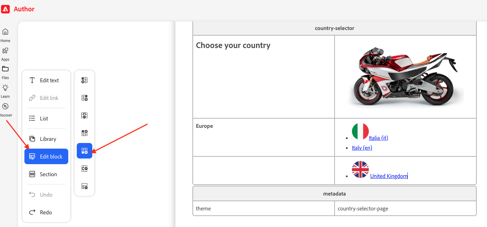
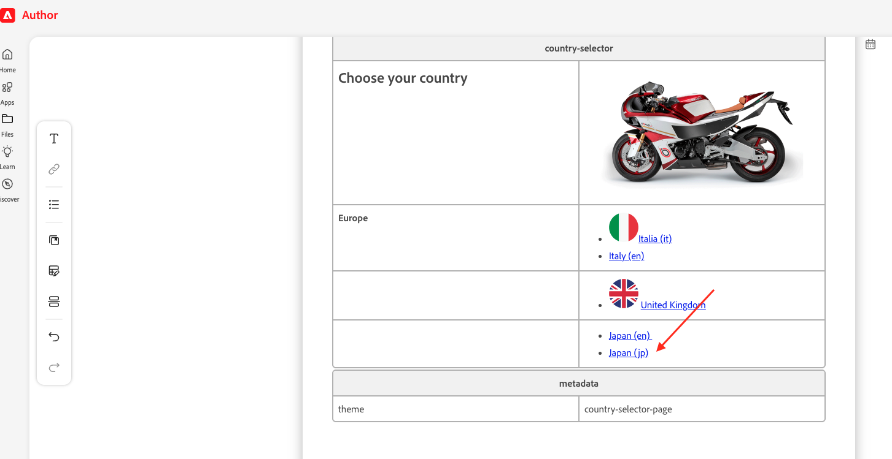
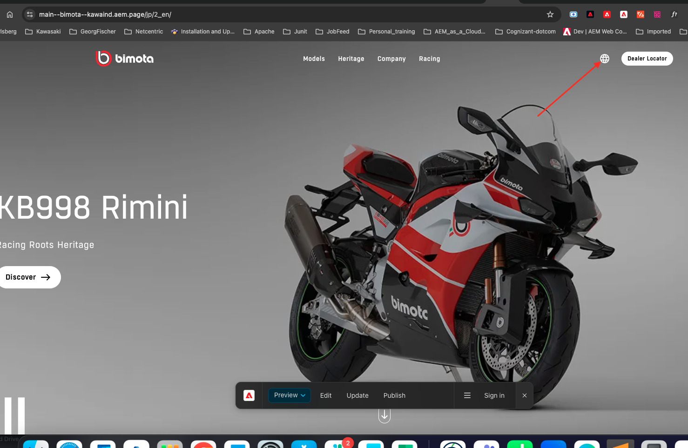

Country Selector
The header locale picker: countries, flags, and links to each localized site.
The Country Selector block is a custom block designed to display the list of countries where the Bimota website is available. Each country is represented with its national flag and linked to the corresponding localized version of the site, with respective language options. It gives visitors a clear, intuitive way to navigate to their regional Bimota site.
Where it lives, and who can edit it
This block is admin-only. If you are an admin or have the required access, navigate to da.live/#/kawaind/bimota, then open the index document at the root of the project. That single document holds the entire country list shown in every page's header.
Adding a new country
- Open the
indexdocument in da.live edit mode. You'll see a table named country-selector with a “Choose your country” header row, then one row per region (e.g. Europe) listing countries with their flags. - Click into the region's cell (or add a new region row below the same table if it's a brand-new region), then use “Edit block” → add column if you need a new row/column for the country group.
- Click the “List” (bullet list) icon to add a new bullet point, and type the country name — e.g.
Japan. - Select that text and click “Edit link”. Paste in the homepage URL for that locale, e.g.
/jp/2_enfor the English version of the Japan site. You can add both language versions as separate bullets under the same country (e.g. “Japan (en)” and “Japan (jp)”). - For the flag icon itself, follow the same pattern as an existing row in the table — copying an existing country's row is the safest way to match the exact flag format already in use.
Preview and publish
After reviewing the content, click Preview. Then navigate to the preview URL for the new locale, e.g. https://da.live/edit#/kawaind/bimota/jp/2_en/index, and click Preview again to confirm the updated Country Selector renders correctly with the new entry before publishing.
What you fill in
| Header row | "Choose your country" heading cell, paired with a representative image (e.g. a bike photo). |
| Region row | A region label, e.g. "Europe", followed by a bulleted list of countries in that region. |
| Country bullet | Flag + country name as a link to that locale's homepage, e.g. Italia (it) / Italy (en). |
| metadata block | A second table at the bottom of the same document with theme = country-selector-page. Required for the block to render correctly — don't remove it. |

The country-selector table in da.live: “Choose your country” header, regions, and flagged country links.

Adding a new country: Edit block → add column, then List to add the bullet.

The published result — a new “Japan” entry appears under Europe alongside Italy and the UK.
Copy/paste snippet
| Country Selector | countries | |---|---|